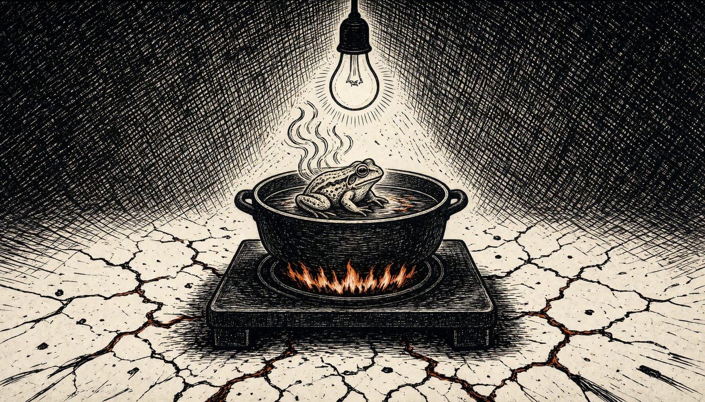

AI makes cyberattacks faster and bigger, Dutch safety service warns
The NDTV says state hackers from Russia, China, Iran and North Korea target the Netherlands. The cabinet has presented a programme to strengthen digital resilience, including a screening service called the AI-wasstraat.

Attackers use AI in every phase of a cyberattack, the Dutch safety service NCTV says in its Cybersecuritybeeld 2026, published on 6 November. That makes attacks faster. The NCTV says AI also adds scale and efficiency. The same day, the Dutch cabinet presented a programme to strengthen digital resilience, including a digital screening service to detect vulnerabilities, called the 'AI-wasstraat'.
The NCTV called the widening gap between state hackers and criminals on one side and Dutch organisations on the other a serious risk to national security. The new Cyberbeveiligingsweg law (Cbw) is entering into force. It forces organisations under it to control cyber risks and puts that duty squarely with their administrators.
The NCTV says Russian hackers used Dutch IP cameras hooked to the open internet to watch military transport routes. They also watched the logistics of weapon deliveries to Ukraine. The same attackers tried to break into the Signal and WhatsApp accounts of Dutch civil servants. NCTV coordinator Marc Kuipers said he cannot prove Russia stands behind single incidents.
Russia is not alone in aiming at the Netherlands. The NCTV says China, Iran and North Korea have also set their sights on the country. Russian groups attack European and Dutch targets continuously, to gather intelligence on the war in Ukraine and to stir unrest among NATO allies. Coordinator Marc Kuipers called the news in the report very bad, saying they had never seen it this bad.
The work on digital resilience must start now, not wait for a war, Kuipers told WNL, the Dutch broadcaster that first reported the interview. He compared the Netherlands to frogs in a pan of water, with the water temperature rising a degree every day.